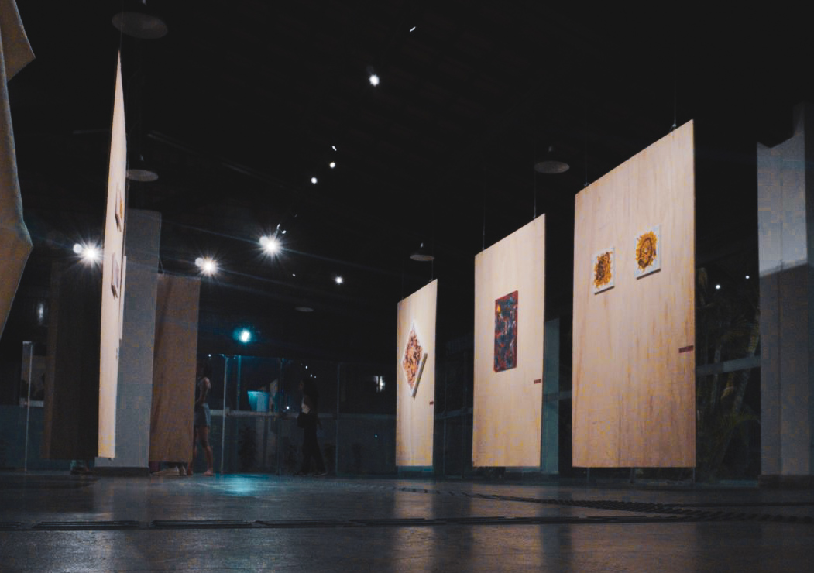
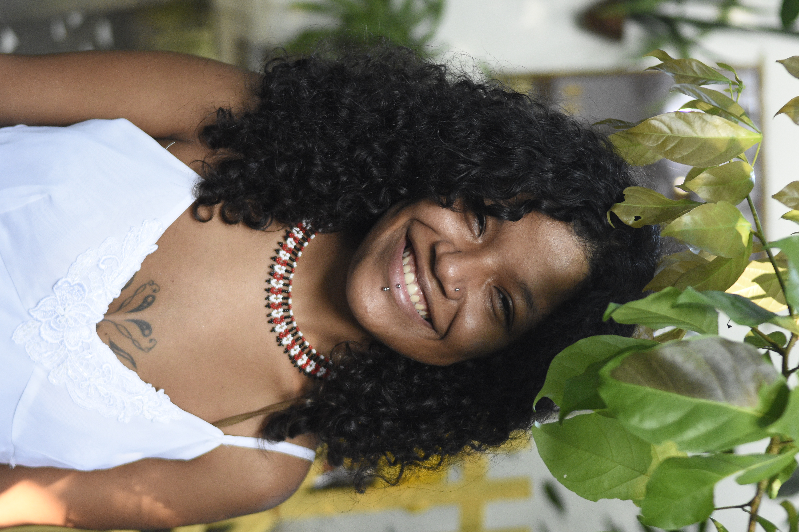
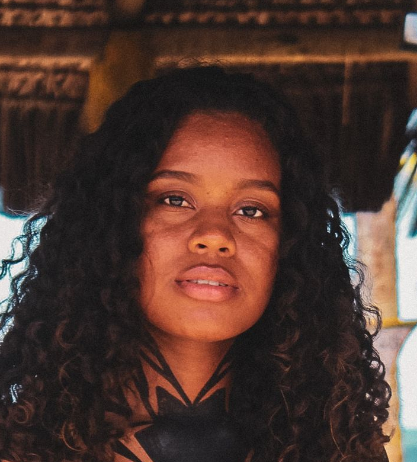
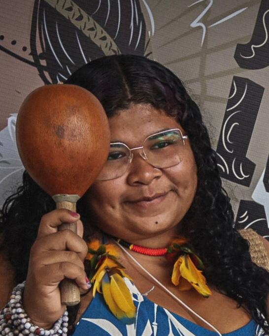
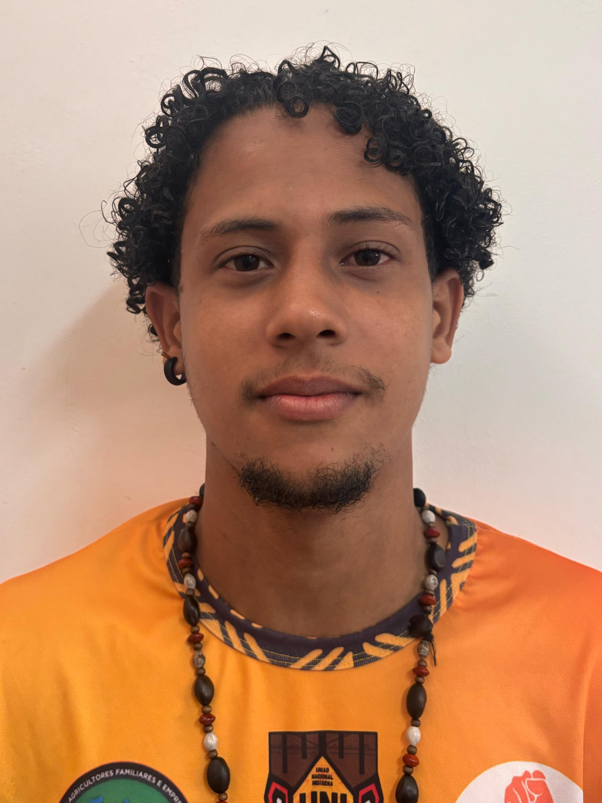
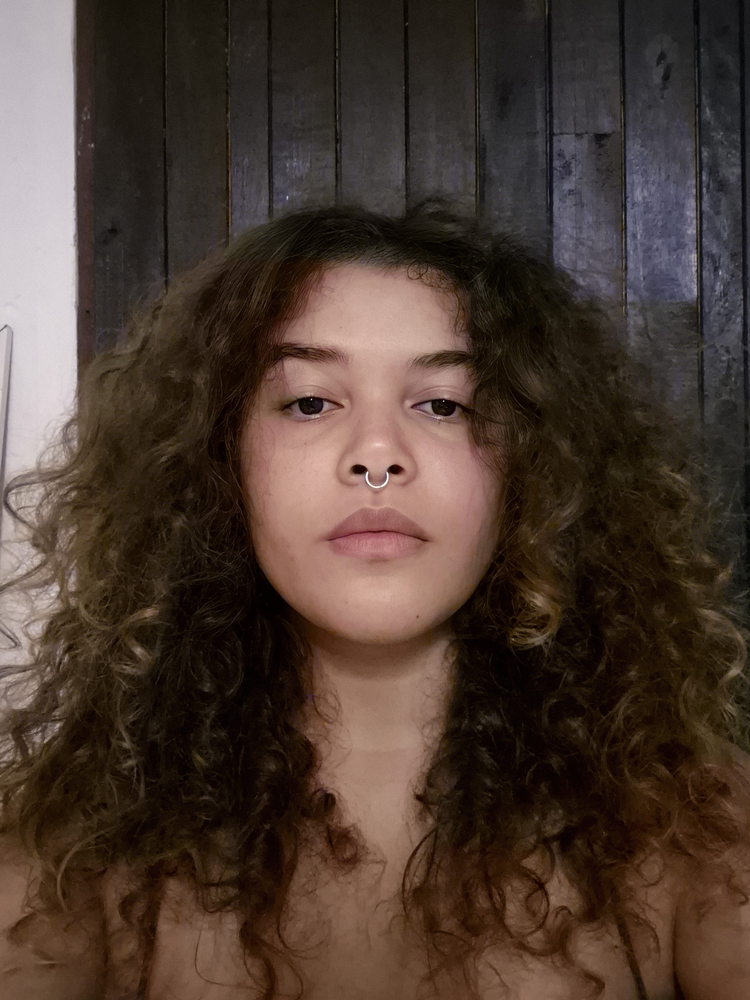
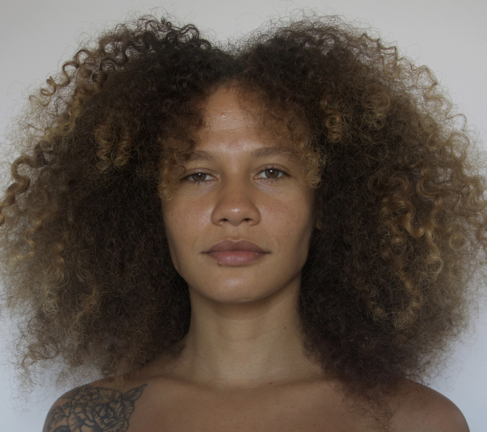
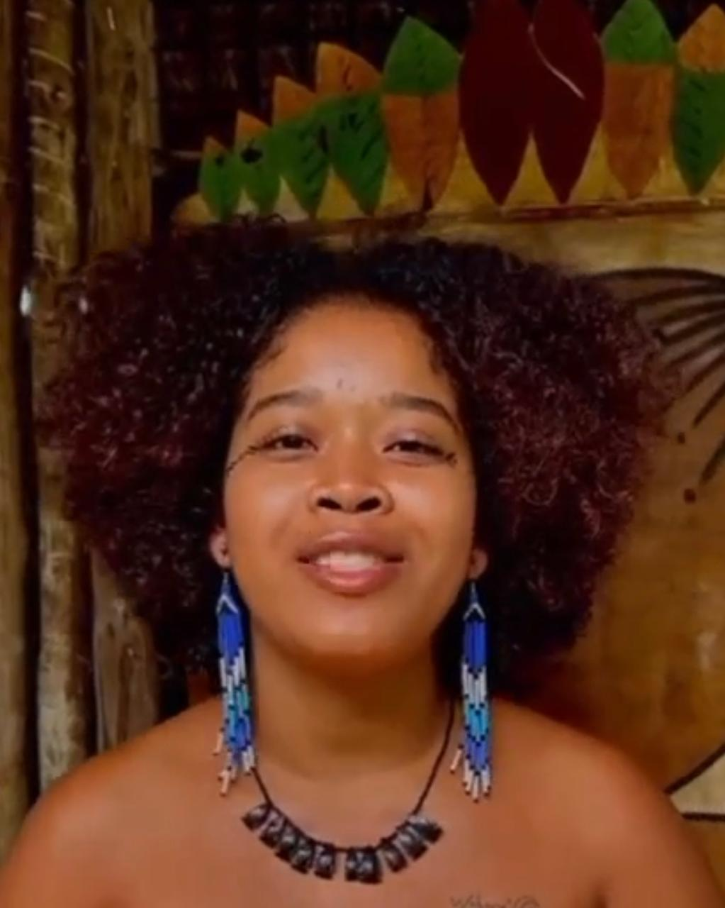
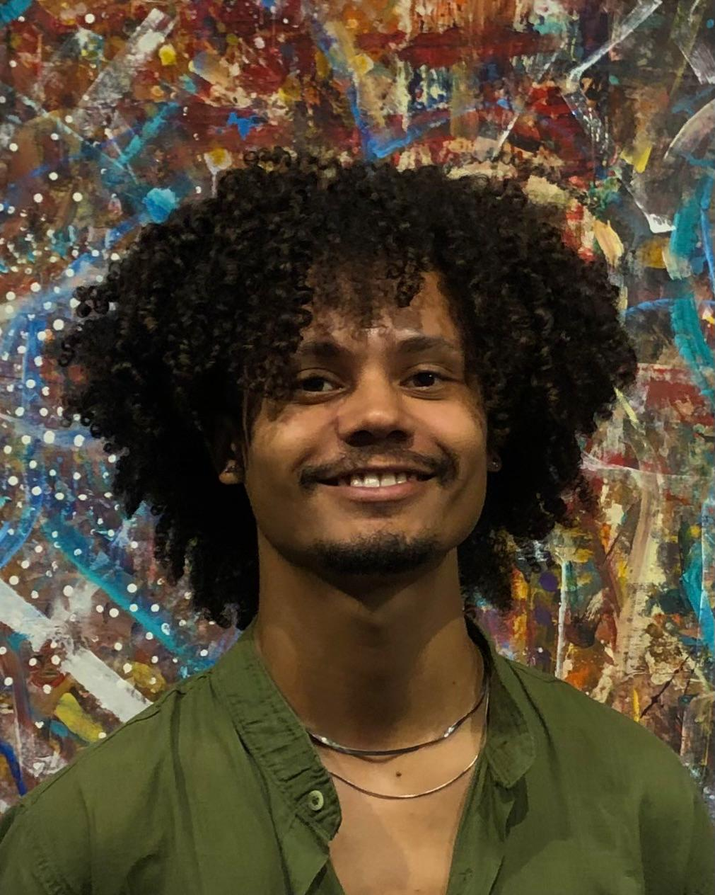

Tecnologias de Cura

Processos Criativos - Ybryda

Território e Memória

Ancestralidade Viva
Tecendo memórias, fortalecendo raízes.
O Coletivo Ybryda é um manifesto vivo de permanência. Vivenciamos a arte afroindígena e LGBTQIAPN+ enquanto tecnologia de cura potente contra o apagamento histórico.
Atuamos na Bahia gerando renda, ocupando universidades e documentando memórias através do barro e da fotografia.

Natural de Porto Seguro (BA), investiga intersecções entre pintura, desenho e animação. Coordenou a exposição “Tecituras das Memórias Afroindígenas“ (2025) e integra o ÍTÁN.

Líder do grupo Tapurumã Ui Ikhã em Coroa Vermelha. Especialista em trajes e pintura corporal, compartilha saberes ancestrais em oficinas e expografias tradicionais.

Pataxó da Aldeia Mãe Barra Velha. Atua na Batalha da Coroa (BDC), usando o hip-hop como ferramenta de empoderamento da juventude indígena em territórios ancestrais.

Artista Tupinambá com foco em articular cosmologias ancestrais com linguagens contemporâneas. Atuou na montagem técnica de importantes exposições no SESC e UFSB.

Natural de Ilhéus, integra o coletivo Ybryda com experiência em gestão cultural na Casa Flor de Tangerina e mediação em exposições afroindígenas no Sul da Bahia.

Idealizadora do coletivo CUIA. Pesquisa a fotografia e o cotidiano sob perspectivas periféricas e LGBTQIAPN+, focando na democratização do acesso à imagem.

Mestranda na UFSB e professora. Sua arte utiliza pigmentos naturais da Mãe Natureza (Tanara) e lidera o coletivo Sarã Pataxó, pautando o sagrado feminino.

Tupinambá, idealizador do coletivo Ybryda. Articula processos de retensão e retomada ancestral através de exposições como "Lynhas y Memórya".

Email: acervoybryda@gmail.com
Seguir no Instagram